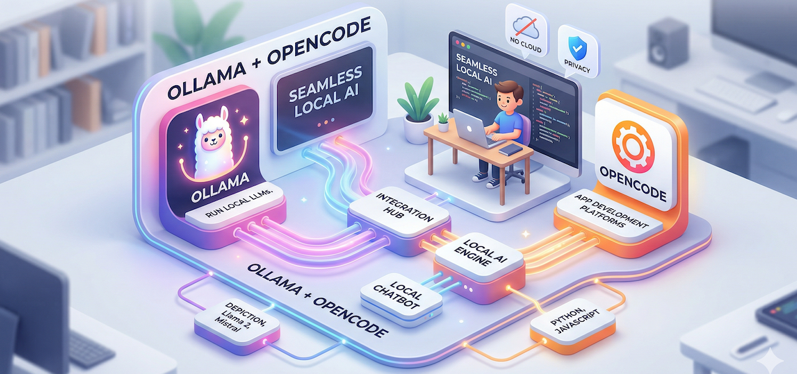

Using Ollama with Opencode
Today I'm showcasing how to integrate Ollama with Opencode to run local AI models seamlessly.
What is Ollama?
Ollama is a tool that makes running large language models (LLMs) on your local machine easy. It supports models like Llama 2, Mistral, and many others with simple commands.
What is Opencode?
Opencode is an AI-powered coding assistant that helps developers write, debug, and optimize code faster. When combined with Ollama, it can run locally without sending your code to external servers.
Quick Setup Guide
- Install Ollama: curl -fsSL https://ollama.com/install.sh | sh
- Download a model: ollama run qwen3-coder-next:q8_0
- Start Ollama server: ollama serve
- Configure Opencode to use your local Ollama endpoint
$ vi ~/.config/opencode/opencode.json
{
"$schema": "https://opencode.ai/config.json",
"provider": {
"ollama": {
"models": {
"qwen3-coder-next:q8_0": {
"_launch": true,
"name": "qwen3-coder-next"
}
},
"name": "Ollama",
"npm": "@ai-sdk/openai-compatible",
"options": {
"baseURL": "http://127.0.0.1:11434/v1"
}
}
}
}Model Info
root@spark-7dd8:~# ollama show qwen3-coder-next:q8_0
Model
architecture qwen3next
parameters 79.7B
context length 262144
embedding length 2048
quantization Q8_0
requires 0.15.5
Capabilities
completion
tools
Parameters
temperature 1
top_k 40
top_p 0.95
License
Apache License
Version 2.0, January 2004
...
root@spark-7dd8:~# ollama list
NAME ID SIZE MODIFIED
qwen3-coder-next:q8_0 3f68e12b44ee 84 GB 20 hours ago
gemma4:31b 6316f0629137 19 GB 46 hours ago
root@spark-7dd8:~# nvidia-smi -l
Tue Apr 7 07:33:28 2026
+-----------------------------------------------------------------------------------------+
| NVIDIA-SMI 580.142 Driver Version: 580.142 CUDA Version: 13.0 |
+-----------------------------------------+------------------------+----------------------+
| GPU Name Persistence-M | Bus-Id Disp.A | Volatile Uncorr. ECC |
| Fan Temp Perf Pwr:Usage/Cap | Memory-Usage | GPU-Util Compute M. |
| | | MIG M. |
|=========================================+========================+======================|
| 0 NVIDIA GB10 On | 0000000F:01:00.0 On | N/A |
| N/A 53C P0 12W / N/A | Not Supported | 98% Default |
| | | N/A |
+-----------------------------------------+------------------------+----------------------+
+-----------------------------------------------------------------------------------------+
| Processes: |
| GPU GI CI PID Type Process name GPU Memory |
| ID ID Usage |
|=========================================================================================|
| 0 N/A N/A 2663 G /usr/lib/xorg/Xorg 126MiB |
| 0 N/A N/A 3318 G /usr/bin/gnome-shell 18MiB |
| 0 N/A N/A 69548 C /usr/local/bin/ollama 89698MiB |
+-----------------------------------------------------------------------------------------+
Benefits of Local AI
- ✅ Say Hi !! - You never lost 4% of token limit when say "Hi !"
- ✅ Privacy - Your code never leaves your machine
- ✅ No API costs - Run models for free
- ✅ Offline capability - Work without internet
- ✅ Full control - Choose any model you want
My Experience
Using Ollama with Opencode has been a game-changer for my development workflow. The local AI assistant helps me write better code faster while keeping everything private and on my terms.
Note: This page was written using Opencode with the qwen3-coder-next:q8_0 model running locally via Ollama!
© peerapat.cc